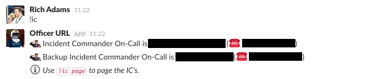
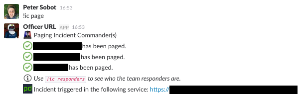
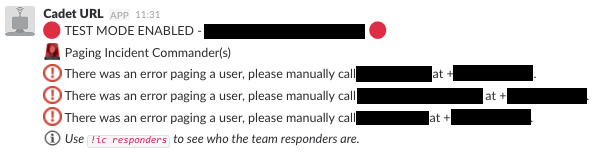
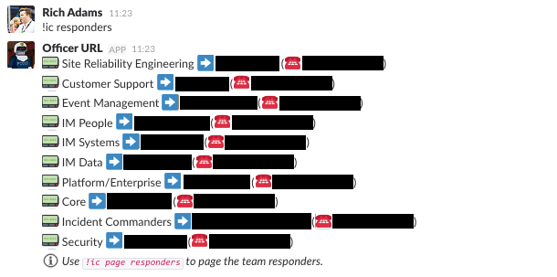
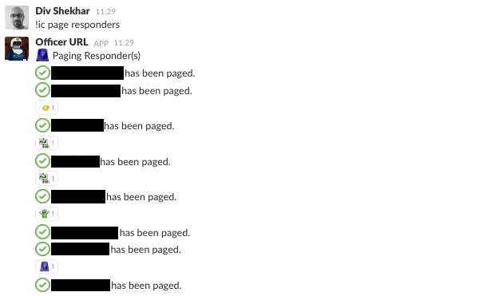
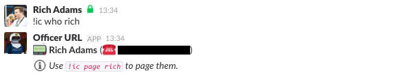
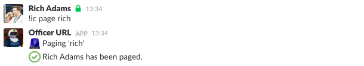
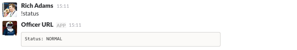
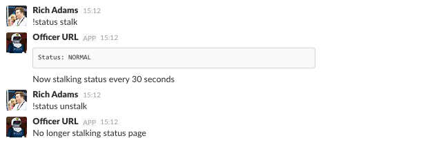

ChatOps
在整个文档中，提到了各种以感叹号开头的聊天命令（例如 !ic page）。我们在 Slack 房间中运行着一些机器人，它们会监视这些命令并在检测到时为我们执行各种操作。本页概述了我们在文档中引用的命令以及它们在幕后的作用。
这些机器人是开源的吗？
遗憾的是，我们使用的聊天插件和机器人目前尚未开源，但我们希望最终能将它们开源，以便大家都能从中受益。在此之前，我们希望本页的描述能帮助您使用自己的工具重现类似的功能。
事件响应#
我们的 !ic 命令在幕后轮询 PagerDuty API，以获取我们指定的各种待命时间表。它会缓存当前待命用户的姓名和联系信息，以便在无法进行 API 请求时，功能不受影响。
!ic#
此命令列出当前的现场指挥官（Incident Commanders）待命人员、他们的电话号码，并告知用户如何呼叫他们。

!ic page#
这是我们用来手动触发事件响应流程的命令。它使用缓存的时间表信息，并会呼叫所有当前待命的现场指挥官（主要、备份及任何旁听的实习生）。如果由于任何原因无法呼叫他们，它还会在房间中通知，并指导用户使用联系信息手动呼叫相关人员。此外，它还会创建一个新的 PagerDuty 事件并链接到该事件。

如果由于任何原因我们无法自动呼叫现场指挥官，机器人会通知我们呼叫失败，并提供相关人员的电话号码，以便我们手动呼叫。以下是我们测试机器人的一些示例输出，我们在其中模拟了由于 API 调用无响应而无法通过 PagerDuty 呼叫的情况。

!ic responders#
这与 !ic 命令类似，只是它使用我们所有服务团队的时间表，而不仅仅是现场指挥官的时间表。它会列出每个工程团队当前待命的所有人员。这对于了解哪些人员可能会立即加入事件通话很有用。

!ic page responders#
这与 !ic page 类似，只是它呼叫响应者列表而不是现场指挥官。这很少使用，因为通常只有相关团队会被呼叫。然而，有时我们需要“全员出动”的响应，并需要快速呼叫所有当前待命人员的能力。

!ic who <user>#
有时我们可能需要确定一个特定的人，以便将他们加入通话。此命令列出特定用户的联系信息，并告知用户如何呼叫他们。

!ic page <user>#
这将通过用户名呼叫特定的人。

状态#
我们的 !status 命令查看我们的内部监控系统，以确定系统当前的状态，如系统自身所报告的那样。这是我们的警报工具用来自动通知我们问题的状态。
!status#
这将告诉我们系统状态的当前概览。如果无法检查状态，它还会提醒我们，因为这也可能是问题的迹象。通常情况下，我们希望它显示 NORMAL 状态。

!status stalk#
这与上述命令相同，只是它每 30 秒轮询一次，直到我们停止它（使用 !status unstalk）。只有在自上次检查以来状态发生变化时，它才会将状态报告到聊天室。我们在事件期间运行此命令，以便轻松查看系统是恶化还是恢复，而无需手动检查我们的监控。
